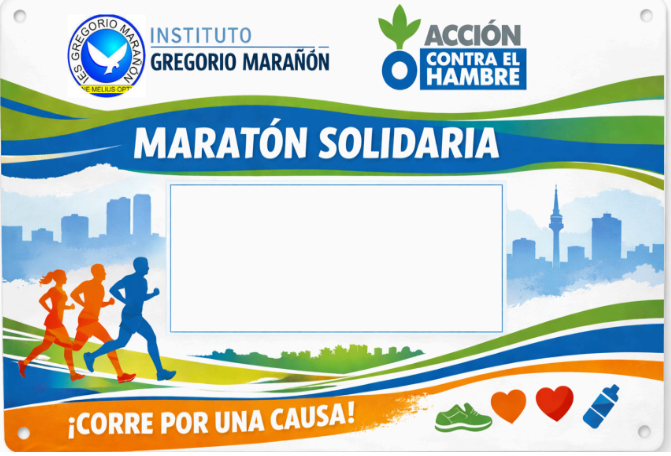

El 23 de marzo celebramos nuestra carrera solidaria.
Deporte, empatía y acción unidos.
La Gregorio Maratón es organizada por el Centro Educativo Gregorio Marañón.
Busca promover deporte, solidaridad y empatía entre los estudiantes.
Todos corremos juntos para demostrar que el esfuerzo y la unión pueden cambiar el mundo.
Para participar necesitarás tu dorsal. Este año cuesta 1€.
Con tu dorsal participarás en un sorteo especial el día de la carrera.
⚠ Es muy importante no perder tu dorsal.

Forma parte de un proyecto de empatía y acción contra el hambre.
Colaboramos con estudiantes de Francia y Grecia para reflexionar sobre cómo los jóvenes pueden ayudar a mejorar el mundo.
Ver videoDependiendo del curso correrás diferentes kilómetros: